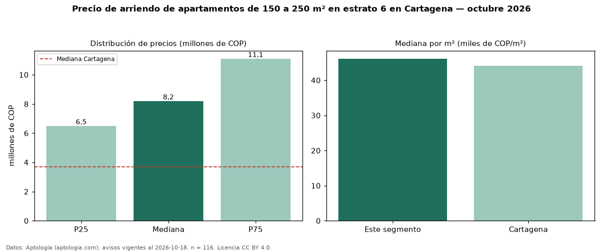

Precio de arriendo de apartamentos de 150 a 250 m² en estrato 6 en Cartagena — octubre 2026
En Cartagena, la mediana de canon mensual de apartamentos de 150 a 250 m² en estrato 6 es COP 8,20 millones, según 116 avisos vigentes. Eso es 49 % más que la mediana de los apartamentos en estrato 6 en arriendo de Cartagena (COP 5,50 millones, n = 608); este segmento reúne el 19 % de esos avisos. Por metro cuadrado, la mediana es COP 46.136/m² al mes (n = 115), 10 % por debajo de los apartamentos en estrato 6 en arriendo de Cartagena (COP 51.136/m²). El área mediana anunciada es 178 m². El segmento con más oferta es el de 3 o más habitaciones (112 avisos, mediana COP 8,20 millones). La administración mediana declarada es COP 1,50 millones al mes (n = 60), aparte del canon. La mitad central de los avisos va de COP 6,50 millones a COP 11,10 millones (razón 1,7), una dispersión moderada. La mediana de todos los apartamentos en arriendo de Cartagena es COP 3,70 millones (+122 % de diferencia). Datos: Aptología (aptologia.com), CC BY 4.0 — https://www.aptologia.com/arriendo/cartagena. Archivos: PDF, CSV con las cifras y gráfica PNG.

| Avisos únicos | 116 |
|---|---|
| Percentil 25 | COP 6.500.000 |
| Mediana | COP 8.200.000 |
| Percentil 75 | COP 11.100.000 |
| Mediana por m² | COP 46.136 |
Fuente: avisos vigentes de portales inmobiliarios recopilados por Aptología, deduplicados (mínimo 30 avisos únicos por celda). Precios pedidos, no cerrados. Fecha: 2026-10-18.